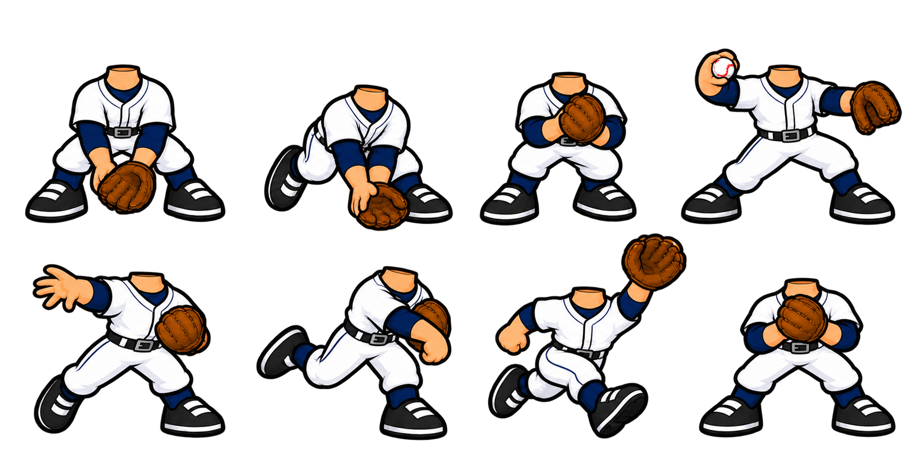

BASEBALL HEROES · 1.0.60 · PUBLICADA
Jugadores mejor integrados en el partido
Recortes individuales para los retratos MLB, movimiento leve de cara y ocho poses ilustradas nuevas para la defensa.
JUGAR 1.0.60Las cuentas y partidas existentes se conservan.
Recortes del rostro
Cada pareja muestra el retrato original a la izquierda y el recorte de partido a la derecha. Se delimitaron las cabezas y se retiraron componentes del bat que quedaban detrás de la cara. Las ilustraciones completas de las cartas conservan sus archivos originales.
 Comparación de recortes: doce casos con distintas formas, barbas y peinados
Comparación de recortes: doce casos con distintas formas, barbas y peinados
Giro, gesto y montaje
Las cabezas MLB reciben la orientación de la pose, parpadean y tienen variaciones leves de gesto. El giro frontal utiliza una deformación suave del retrato existente; no son perfiles redibujados individualmente. Los corredores con casco usan las vistas traseras ilustradas existentes al dar la espalda.
La barbilla se monta sobre el cuello del cuerpo. Se revisaron ejemplos de los jugadores aprobados y otros de distintos tonos, barbas y peinados.
 Retrato original arriba a la izquierda; recortes y giros de prueba a la derecha; seis poses nuevas abajo
Retrato original arriba a la izquierda; recortes y giros de prueba a la derecha; seis poses nuevas abajo Revisión de una barba que se cortaba con la primera máscara
Revisión de una barba que se cortaba con la primera máscara
Ocho poses nuevas de fildeo
Preparación baja, recogida, transferencia al pecho, preparación del tiro, liberación, seguimiento, carrera con el guante alto y postura final. Las manos y el cuello tienen anclajes medidos; se conserva el tiempo de las jugadas y los sonidos.

Hoja creada con la herramienta integrada imagegen; PNG original conservado. Prompt y procedencia.
Defensor durante la recogida
 Antes · 1.0.59
Antes · 1.0.59 Ahora · 1.0.60
Ahora · 1.0.60Atrapada y unión de la cabeza al cuerpo
 Antes · 1.0.59
Antes · 1.0.59 Ahora · 1.0.60
Ahora · 1.0.60Nueva secuencia de tiro
 Antes · 1.0.59
Antes · 1.0.59 Ahora · 1.0.60
Ahora · 1.0.60Secuencia del lanzador
Los controles muestran capturas equivalentes, no un video grabado.
 1.0.59
1.0.59 1.0.60
1.0.60Verificación
- Comprobación de geometría y conservación de la región central de piel detectada en los 1,512 retratos. Es una prueba de cobertura; no certifica visualmente todos los contornos de pelo y barba.
- Revisión en Chrome de trece jugadores con giros y seis poses de cuerpo; escenas de hit, fildeo, tiro y llegada.
- Partido completo de nueve entradas: marcador y estadísticas reconciliados; avance de temporada una sola vez.
- WebMain final local y publicado: registro Rookie, compras, alineación, guardado y entrada al partido.
- Paquete público cotejado por hashes, copia de seguridad y comparación de perfiles y partidas previos; cuenta QA retirada.
El partido local registró p95 de 35 ms por fotograma. No equivale a una medición en tu computadora. Build 4f33fa11c8f267e4.
Quedan pendientes perfiles dibujados para cada jugador, más expresiones y una revisión visual exhaustiva de los contornos del catálogo. Esta entrega aplica los tres primeros puntos de la lista con un giro frontal leve y nuevas poses de defensa.